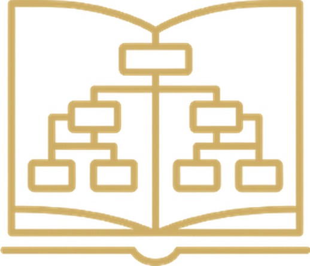
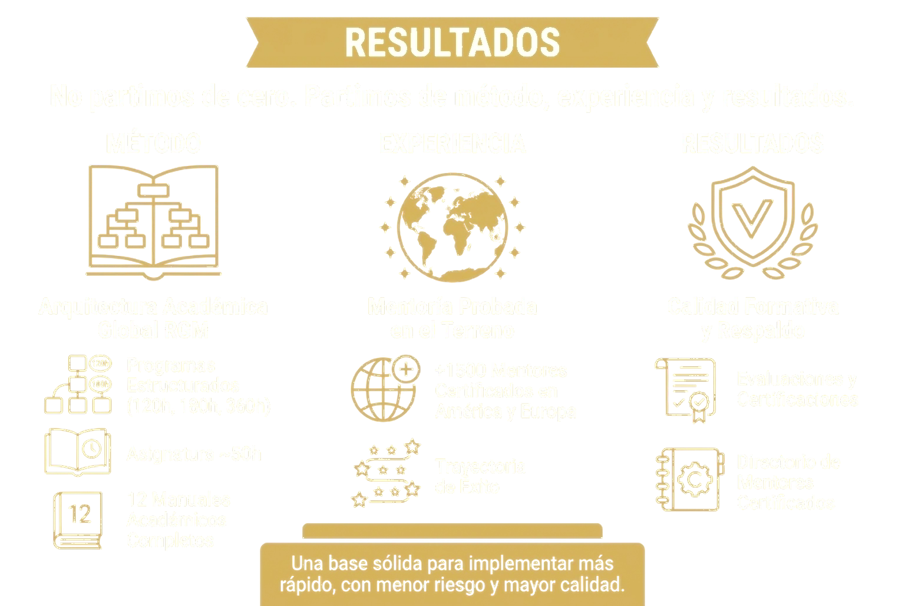

01Estruturamos o conhecimento
Manuais, guias académicos e recursos formativos. Concebemos a arquitetura concetual e metodológica que permite transformar a mentoria numa disciplina ensinável, avaliável e certificável.
Manuais →Forme-se na nossa academia, com cursos dos mentores mais distintos da nossa comunidade.
Conteúdos criados por mentores, para mentores

Dr. Nelson de J. Rueda
Diretor-Geral
Transformamos experiência em formação profissional em mentoria.
A Academia Global RGM desenvolve, estrutura e certifica a mentoria como disciplina profissional.
Acompanhamos pessoas, universidades e organizações na criação e implementação de programas de mentoria com método, padrões internacionais e visão transformadora.
Concebemos programas académicos prontos a aplicar, certificamos mentores e apoiamos as instituições na integração da mentoria nos seus modelos de formação.
O mundo mudou, e a formação humana e profissional está chamada a evoluir com ele. As universidades trazem conhecimento. As organizações impulsionam o desenvolvimento de competências. As pessoas constroem experiência ao longo da vida.
Neste novo contexto, a mentoria torna-se essencial: uma ponte entre conhecimento, experiência e transformação consciente.
A mentoria transforma a experiência em critério, a consciência em melhores decisões e o percurso pessoal em valor para os outros. É uma disciplina de acompanhamento que permite orientar processos de desenvolvimento em momentos-chave da vida profissional e humana.
A Academia Global RGM estrutura, ensina e certifica esta disciplina, formando mentores com presença, método e responsabilidade.
As funções da Academia, com acesso direto a cada secção.

01Manuais, guias académicos e recursos formativos. Concebemos a arquitetura concetual e metodológica que permite transformar a mentoria numa disciplina ensinável, avaliável e certificável.
Manuais → 02
02Programas académicos adaptáveis, com arquitetura académica, metodologia e critérios de avaliação, prontos a ser implementados por universidades, organizações e centros de formação.
Programas → 03
03Chancela institucional e critérios de qualidade que asseguram coerência concetual, rigor académico e padrões internacionais.
Chancelas → 04
04Certificamos mentores, validando a sua experiência, critério e capacidade real para acompanhar processos de transformação.
Certificações →Uma rede de centros autorizados para implementar programas de mentoria com metodologia RGM, padrões académicos e acompanhamento institucional.
Centros de formação → 06
06Uma plataforma digital que integra conteúdos académicos, atividades práticas, avaliação e certificação, para escalar a formação de mentores com qualidade e rastreabilidade.
Cursos virtuais →
Incorporar a mentoria em licenciaturas e pós-graduações. Criar cursos de especialização e mestrados. Diferenciar a sua oferta académica.

Converter a experiência numa profissão. Certificar-se como mentor. Desenvolver uma proposta de valor.

Desenvolver líderes com critério. Implementar programas de mentoria. Melhorar a cultura organizacional.
Criar centros de formação. Escalar conhecimento. Gerar impacto e negócio.
A Academia Global RGM reúne uma arquitetura académica já desenvolvida para que universidades e organizações possam implementar a mentoria com clareza, respaldo e qualidade formativa:
Uma base sólida para implementar mais depressa, com menor risco e maior qualidade.

A Academia Global RGM foi concebida para responder aos padrões de qualidade, rigor académico e rastreabilidade institucional que o ensino superior exige.
A sua estrutura metodológica, a sua liderança académica e a sua expansão internacional fazem dela uma plataforma sólida para que universidades e instituições possam desenvolver programas conjuntos, certificações com dupla chancela, investigação aplicada e extensão universitária especializada em mentoria.
A sua projeção é clara: consolidar-se como uma referência internacional na formação e certificação de Mentores Especialistas, ligando ciência, prática profissional, tecnologia e ética num modelo de excelência.
A Academia Global RGM nasce de uma história construída na prática, consolida-se no presente com programas e certificações, e projeta-se internacionalmente como uma plataforma para formar mentores capazes de acompanhar a transformação humana e profissional.
A partir desta base, impulsiona o crescimento da Red Global de Mentores, da Rede Global de Mentores e da Global Mentoring Network.